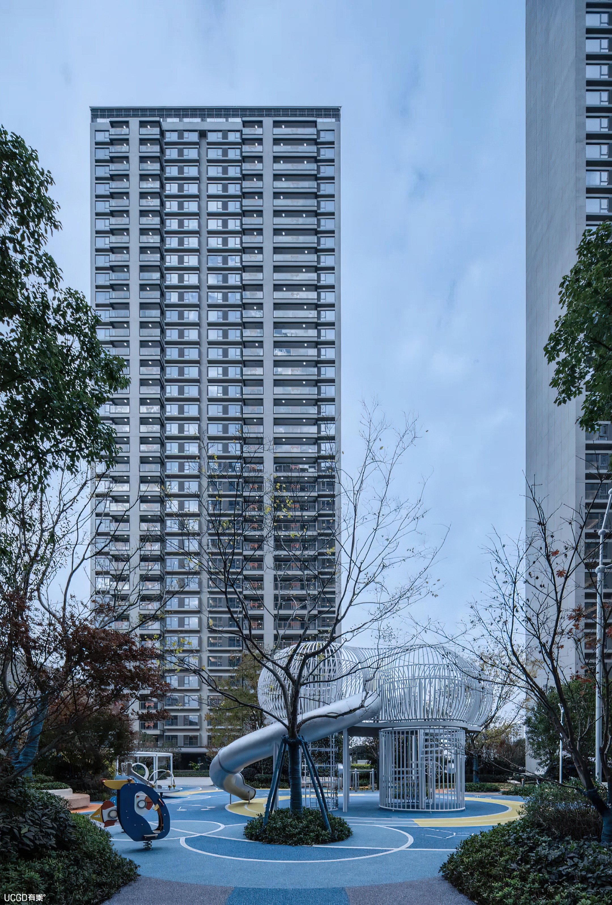

1111
Press play after loading. If playback is unavailable, open the original video.
Watch on Bilibili ↗Architecture
Architectural models and rendered views exploring the relationship between residential buildings, public spaces and the site.

Residential project work undertaken at BYD Survey and Design Co., Ltd. The project name follows the original portfolio.
Press play after loading. If playback is unavailable, open the original video.
Watch on Bilibili ↗Team project. My contribution was modeling and architectural visualization; overall design belongs to the original team.